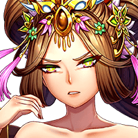
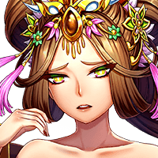
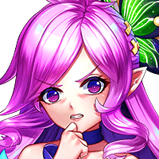

Episode 7
—Wheel of Fate—
The snarling and hissing grows louder with every crash of thunder.
Tevarius runs his hands through his hair in a fit of pique, caught between the advancing Naga and a seemingly indestructible door.
Should've known the *Queen Mother* wouldn't leave her front gate unprotected...
Tevarius
We don't have time to be figuring this out, enchantment or not.
Tevarius
Sero, behind me! Now!
The first scrabbling Naga to reach the top did so with a nasty grin as it reached out to flense and maul.
Until a sharp whistle cutting through the air snapped the Naga out of its bloodthirst,
and a sudden blast of jade-green energy vaporized the creature on contact.
The Naga swarm barely had time to react before the energy careens off their downed brethren, lancing down and through their ranks.
The swarm cries out in anger and confusion as the weaker ones are blasted apart.
Tevarius
(Is that...charged energy?)
Tevarius keeps his eyes trained on the survivors, his own bolts crackling within his fist.
There was no telling if the chain lightning ripping through their ranks was a trap.
Naga
Mgvulgtlagln l' ah ymg'...!
Unable—or unwilling—to cross that arbitrary threshold of certain death, the swarm recedes and slithers back down the stone steps.
Sero-Anya
Tev...I don't like this...
Sero-Anya
How long do we have to stay out here?
Tevarius
We're lucky to be alive, I suppose...
Tevarius
There's not much else we can do if the Queen Mother refuses our entry into her do—
The ornate doors to the Pagoda begin to glow brightly, and arcane symbols in Southern script flash across its surface.
With a tiny click, the entrance hall glides into view as the enormous doors pull back almost effortlessly.
If Tevarius and Sero-Anya are slack-jawed at the occurrence, it was more due to the fact...


...that a radiant, *glowering* entity was floating before them, displeasure plain on her face.
At the very least, the Queen Mother was civil enough to invite the ragged duo into the Pagoda.
Her visage was now devoid of any emotion, a stark contrast to her annoyance before.
Those pale eyes never flickered between the bewildered faces of her guests, as if she were deep in meditation...or simply unable to see.
N'an-Wang-Mu
So, the Great Sage sent you here. With...
She peers down at a minutely trembling Sero-Anya, who avoids her gaze and shuffles behind Tevarius.
Tevarius
...This is Sero-Anya. The Great Sage believes she is the reincarnation of Juno-Seto.
Tevarius
After the incident at the Crystalline Spire, she was found wandering around the Southern Plateau.
N'an-Wang-Mu's contemplative, half-lidded stare unsettles Tevarius.
N'an-Wang-Mu
Yes...I have heard of that.

Her stoic demeanor breaks slightly as her brows furrow, and she raises her head toward the soaring ceiling of the Pagoda.
N'an-Wang-Mu
Zeruiah mentioned her research into the Stargates—those ancient portals of communication to the vast universe beyond our own.
N'an-Wang-Mu
I never expected her endeavors to be successful, much less the arrival of a...foreign deity.
N'an-Wang-Mu
But none of that compares to the fact Zeruiah took her in at all.
N'an-Wang-Mu
Ahh, her daughter had changed her so. Indeed, Eirwen gave the Sage a heart.
N'an-Wang-Mu
But Zeruiah was undone by her own kindness.
Tevarius
What do you mean?
N'an-Wang-Mu
The foreigner brought the Ravaging Void to us, did she not?
A sudden pain blinks into Sero-Anya's mind at the mention of the Void.

Sero-Anya
It was...mine...
Sero-Anya shakes her head, confused and distressed at the growing frequency of these fractured memories.
N'an-Wang-Mu
Listen carefully, visitors.
N'an-Wang-Mu
I thank you for coming to me with news of my old friend...and of the Naga.
N'an-Wang-Mu
However...lands beyond my own are none of my concern.
N'an-Wang-Mu
The Southern Plateaus of N'an-Xin have survived all this simply by not involving ourselves in the affairs of others.
N'an-Wang-Mu
Those who upset the balance must be the ones to put it right.
The Queen Mother's cold gaze shifts to the trembling form of Sero-Anya.
Tevarius
What...?! Juno- She-
Tevarius
How could you be so *callous*?!
Tevarius
Does Zeruiah not mean anything to you?
Tevarius
Does the fate of another goddess—one who protected her adopted world—not move you?!
N'an-Wang-Mu
What impudence...
N'an-Wang-Mu
It seems that you need a lesson in respect...unruly spirit.


{kind=link}
{kind=link}
{kind=link}